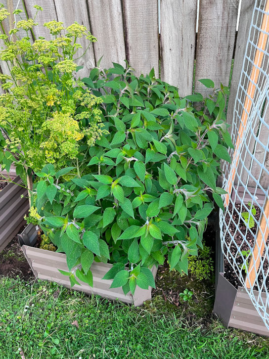

Pineapple Sage Tea

Pineapple sage is from the sage family, and smells like pineapple.
It is a popular addition to cocktails to enhance its flavour, with plentiful of benifical properties.
During summer months, it will grow abundantly and thus I have made it into tea.
There are many benefits of pineapple sage tea such as:
- anti-depressant properties
- anti-anxiety properties
- balances the nervous system
- assists with digestion issues such as heartburn
It can be infused freshly picked, or dehydrated for storage. Due to the abundance
of my pineapple sage harvest, I will be going through how I store them away.
Steps to dehydrate pineapple sage
- Collect clean, fresh leaves that are free of damage from your plant.
- Cleanse the leaves in a clean water basin or bucket by adding some salt and leave
for 20 minutes. I add roughly 10g of salt per 100ml of water used.
- Shake off excess water by placing leaves in a salad spinner. [1]
- Lay out leaves nicely inside a dehydrator.[2]
- Set dehydrator setting to 55 degrees Celsius at 8 hours.
- Collect the dehydrated leaves and store it in an airtight, clean container.
[1]You can omit this step if you do not have a salad spinner.
[2]If you do not have a dehydrator, then place leaves on a clean surface and place in a spot where the sun can airdry the leaves.